LEAVE YOUR
MARK
ON THE WORLD
A social networking app for film and tv enthousiasts. Rate films you've watched, create goals to see more, and share it with friends.
Creativity
Expression
Communion
Step into a world centered around companionship, creativity, and self expression. Explore our extensive catalog of movies and TV series, featuring a diverse range
of genres, languages, and eras, and share your thoughts about them. Write reviews, create and share lists, join communities, and so much more with Marqued.
Tell people what you've watched
Log and rate your favourite media
Make and share lists with the world
Create goals to watch even more media
Our Extensive Catalogue
Discover our diverse range of available movies, short films, tv series & episodes,
anime and more. Check out a preview right here.

 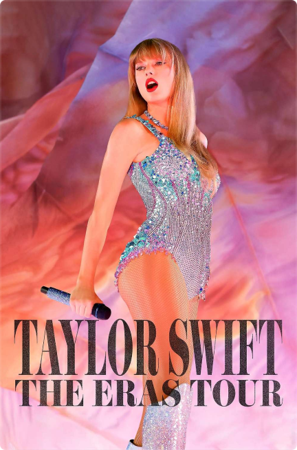
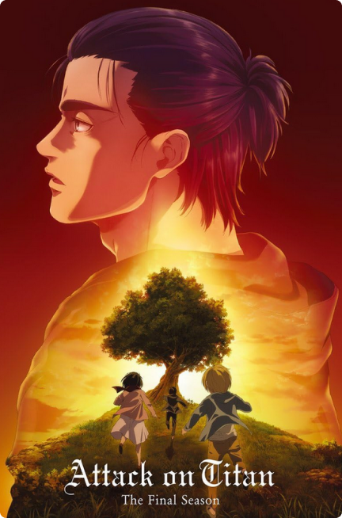
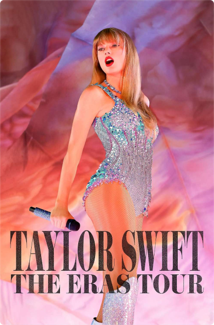
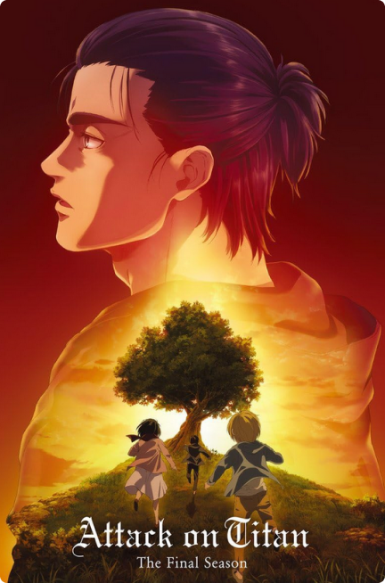
 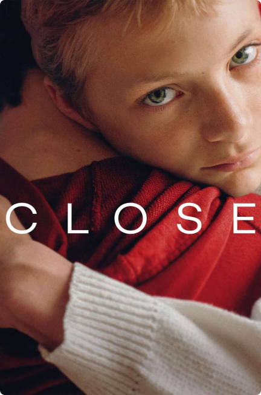
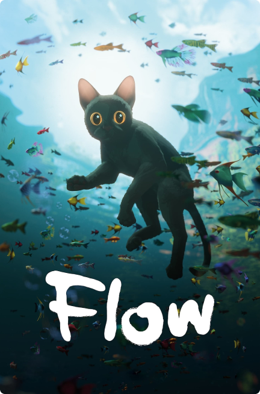
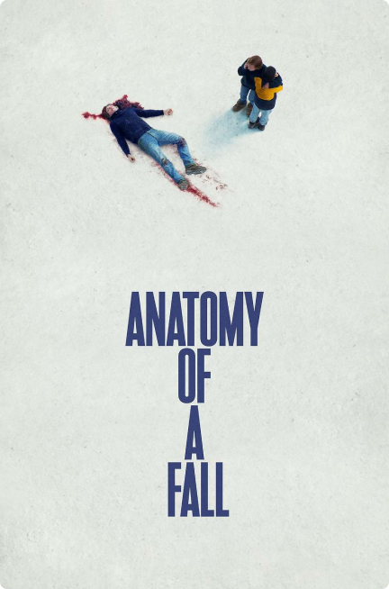
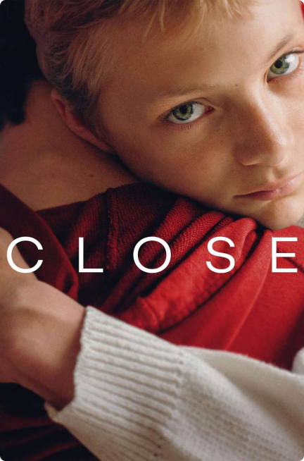
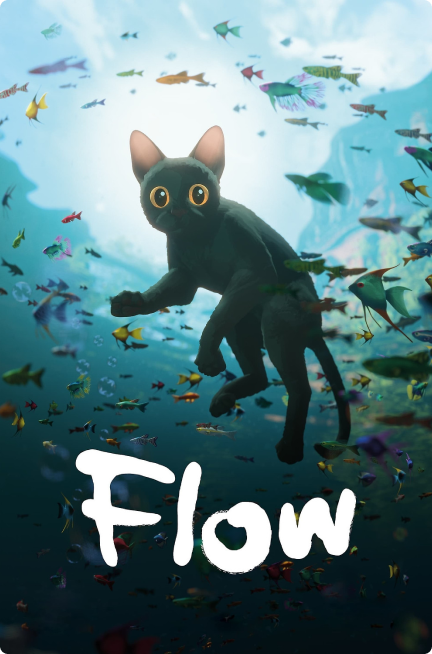
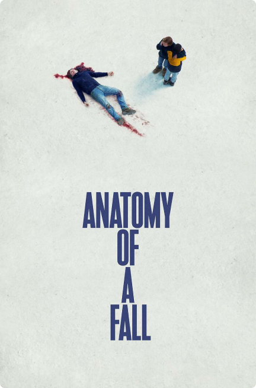


 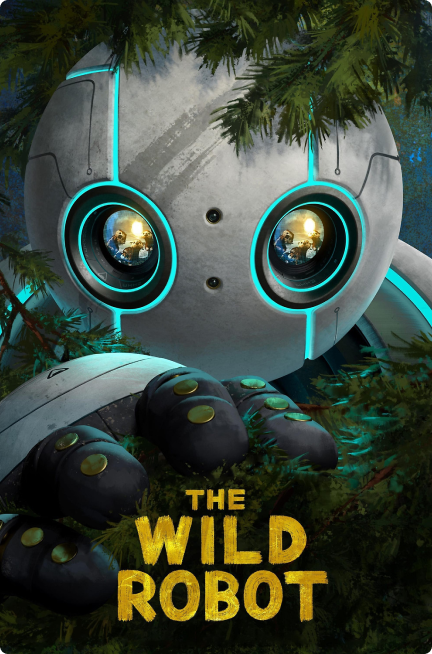
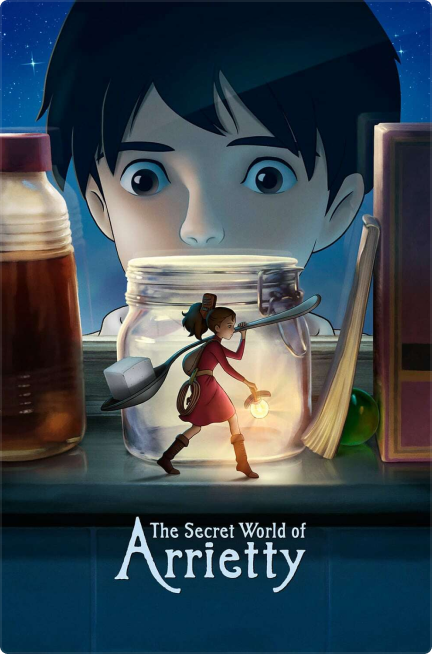
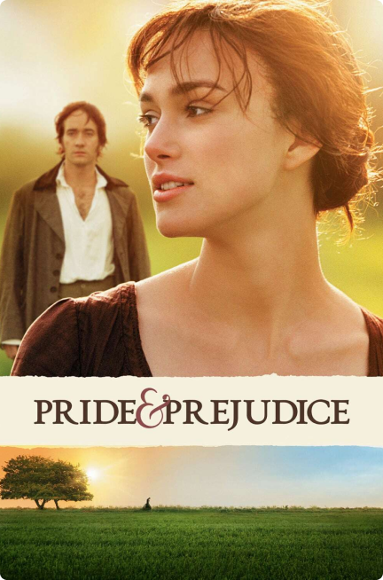
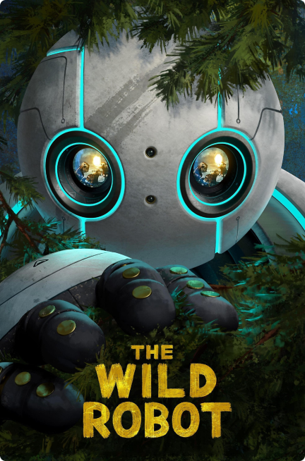
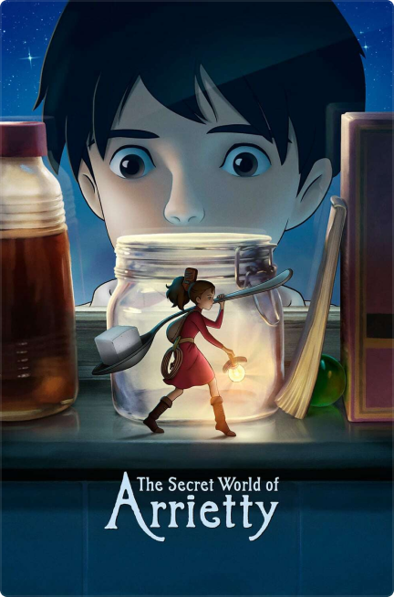
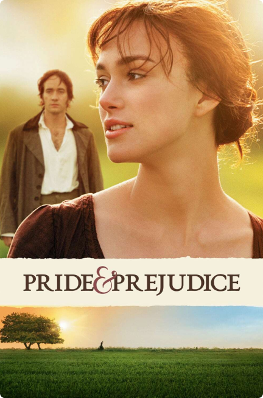
About Designer
My name is Yann Leyers, and I am a UX/UI designer at AP Hogeschool Antwerpen. In addition to my passion for
interface design, I also have interests in analog photography, dance, and video games. I am always seeking
new inspiration, which is why it’s important for me to broaden my interests across various fields.
I designed Marqued as a platform for film and TV enthusiasts to share their passion with others. Creativity and self-expression have been central themes throughout the app’s design and in my own life. For my app and web designs, I consistently draw inspiration from my surroundings and personal interests, aiming to add a unique and personal touch to my work, with the hope that it will resonate with others.
I designed Marqued as a platform for film and TV enthusiasts to share their passion with others. Creativity and self-expression have been central themes throughout the app’s design and in my own life. For my app and web designs, I consistently draw inspiration from my surroundings and personal interests, aiming to add a unique and personal touch to my work, with the hope that it will resonate with others.